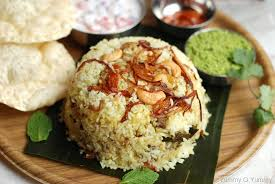

Beef Biriyani

Discription
it is a really famous dish all over the world and the flavour and taste of briyani changes according to the place so much that some people dont even consider other biryanis as biriyani
incredients
Steps
- cook the beef partially with the spices
- put the washed rice to it and add water
- seal the vesel with maida and dumm under the heat of coal